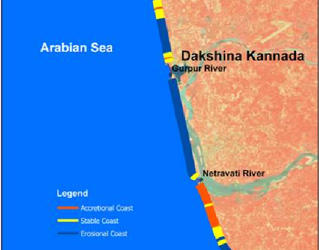

Analysis of major coastline changes along southern Karnataka coast, India between 1965, 2006 and 2016 using Google Earth Engine.
 Project - RRSC (NRSC), Bengaluru (Jan' - May, 2023)
Study employs advanced geospatial analysis techniques facilitated by Google Earth Engine to unravel the dynamic transformations occurring in this ecologically vital coastal region. The primary objective of this research is to assess and quantify the alterations in the coastline morphology over a span of five decades. By leveraging the capabilities of Google Earth Engine, I aim to analyze land-water interfaces, identify erosion and accretion patterns, and provide insights into the driving forces behind these changes.
Implemented change detection algorithms to identify alterations in the coastline position over the three chosen time periods. Also I quantified rates of erosion and accretion to understand the magnitude of coastal changes.